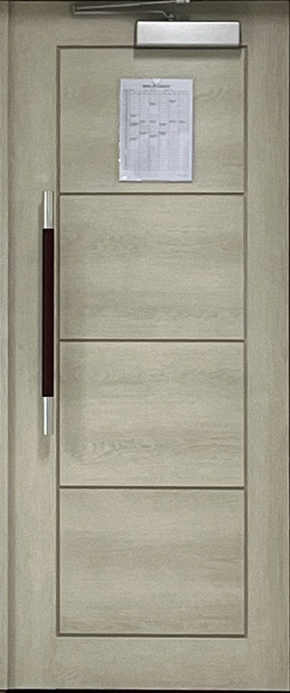
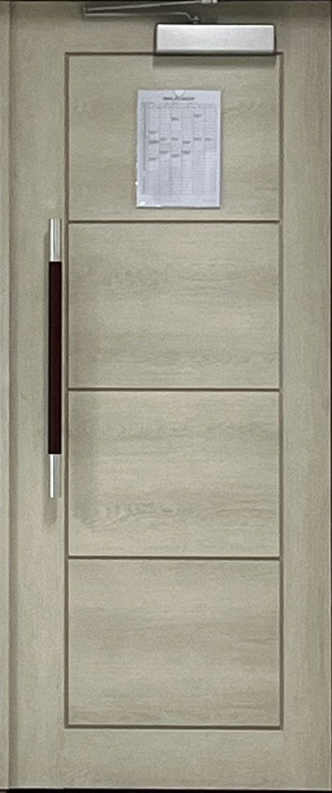
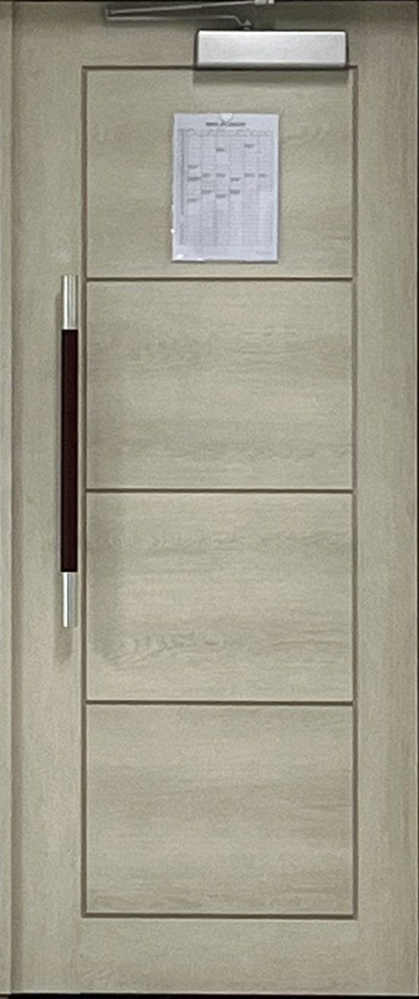

사람이나 물체가 건물의 안과 밖을 오갈 수 있게 한 통로이며, 공간을 나누고 연결하는 기능적이면서 상징적인 건축요소이다.
1.출입구 역할
사람이 들어오고 나갈 수 있게 해주는 구조
2.공간을 나눔과 동시에 연결
안과 밖, 방과 방 사이처럼 서로 다른 공간을 구분하면서도 연결
3.의미와 분위기를 담는 구조물
문은 단순한 통로가 아니라 누구를 환영하는지, 어떤 장소인지를 보여주는 상징이 됨

 

사람이나 물체가 건물의 안과 밖을 오갈 수 있게 한 통로이며, 공간을 나누고 연결하는 기능적이면서 상징적인 건축요소이다.
사람이 들어오고 나갈 수 있게 해주는 구조
안과 밖, 방과 방 사이처럼 서로 다른 공간을 구분하면서도 연결
문은 단순한 통로가 아니라 누구를 환영하는지, 어떤 장소인지를 보여주는 상징이 됨
